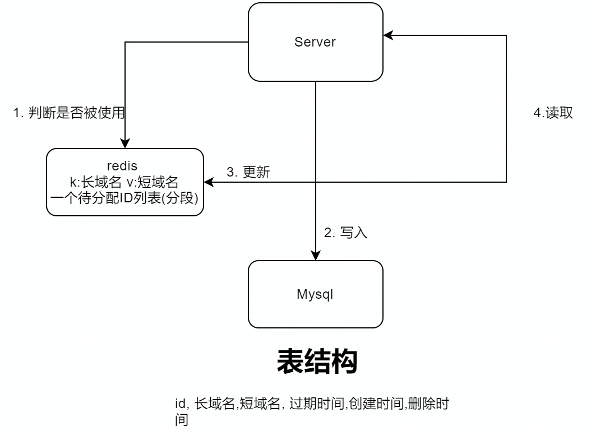

系统设计(1): 短域名系统
1. 背景
短域名 TinyURL 是一个在线服务，可以将长的 URL 转化为一个短的 URL 完成重定向。
微博/Twitter 要求推文限制在 100 多个字符，如果直接使用原始链接，将大幅度限制用户的发表字数；日常使用的二维码是根据字符生成的，长 URL 生成的二维码更加不好识别。
以上场景导致短域名系统的出现。
2. 分析
2.1 系统输入
- 一个冗长的域名
- 一个自定义的别名
- 一个过期时间
2.2 系统输出
自定义别名或者随机生成的短域名，在过期时间到来前访问都可以被重定向到原始的冗长域名上
2.3 系统要求
2.3.1 需求
- 过期后短域名将失效
- 短域名是唯一的
- 支持自定义短域名，并且限制规则
2.3.2 系统指标
- 读多写少系统，估算 1 亿用户使用
- 写 QPS = 100 M * 0.1 / 86400 = 1k -> 峰值 2k -> 预估值 = 4k
- 读 QPS = 100 M * 10 / 86400 = 115k -> 峰值 230k -> 预估值 = 460k
系统设计时需要考虑峰值和预估值，峰值为用户访问的上限值，预估值为经过几年用户增长后，用户访问的上限值。
- 延迟、可靠性（几个 9）、安全性
3. 方案设计
3.1 可行解
先从业务需要简单实现一个可用的系统，需要完成以下接口。
写接口：
- 输入长域名，判断是否存储
- 生成一个从未使用过的短域名
- 将长域名和短域名的关联持久化到数据库中
读接口：
- 获取短域名，判断是否有效
- 根据短域名查询长域名
- 使用长域名通知客户端重定向
处理过期时间
增加过期时间有以下方案：
- 延迟删除：获取短域名时判断是否过期，过期则进行删除。优点是性能损失小，修改方便；缺点是造成空间浪费
- 定时删除：设置定时任务，为每个短域名设置删除回调，过期则立即删除。优点是空间利用率最高；缺点是维护定时任务占用大量内存，性能差
- 轮询删除：设置后台逻辑，定时清理过期元素。空间和性能的折中考虑。
由于系统要求低延迟，性能要求高，故选择延迟删除方案。
保证域名唯一
一个全局唯一的分布式 id 便能保证域名的唯一性，实现分布式 id 有以下方案：
- 哈希，需要处理哈希冲突
- UUID，性能损耗大
- 数据库自增 id，可以通过号端模式降低性能开销，但安全性较低
- 雪花算法
综上，一个可行的系统如下图所示：

3.2 系统优化
吞吐量
- 水平拓展系统，使用 NGINX 进行负载均衡
- 进行分片、数据副本
延迟
数据库层面：
- 数据表的业务逻辑很简单，考虑将关系型数据库改为持久化 kv 引擎，例如 LevelDB
- 构建索引：写入时需要判断长域名是否存在，对长域名建立索引
缓存层面：
- 判断长域名是否存储和短域名是否分配，可以构建布隆过滤器
- 考虑在客户端建立缓存，存储长短域名映射，进一步降低延迟
业务层面：
- 利用号端模式获取批量 id，降低全局 id 的性能开销
可靠和安全性
- 数据库采用主从模式
- 使用 kafka 与 binlog 的方式进行全量与增量的跨机房数据冗余备份
- 根据监控指标，进行系统熔点、限流、扩缩容
- 直接使用自增 id 作为短域名，避免被遍历爬取
- 进行 IP 限流和黑名单防止 DOS 攻击
参考资料
本博客所有文章除特别声明外，均采用 CC BY-NC-SA 4.0 许可协议。转载请注明来自 包老师写作的地方！